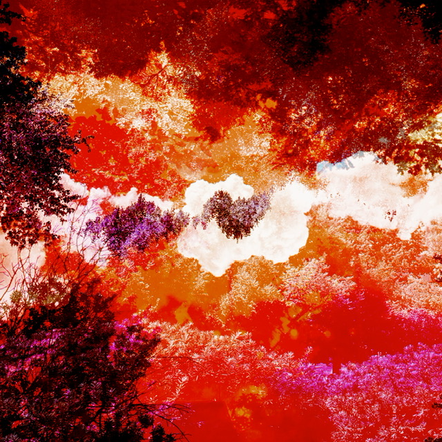

Alteration
More original pictures captured by the elusive Jude Thomas taken from out on a hike somehwere in Washington state. To "Alter" is to change or cause to change in character or composition. The proces of this makes up "Alteration," the compliation and orientation of these separate entities can be brought together to make a unified whole with an entirely separate message behind it.

Visual Rhythm (Busy/Fast)
I remember working on this alongside "Visual Rhythm (Slow/Controlled)" back at Heartland (HCC) before transferring to ISU for Creative Technology's (CTK) Audio and Music Production (AMP) sequence. It was for a Digital Media course (DMED 120) called Computer Imaging and Design. We were assigned to represent balanced visual rhythm in two final compositions of "Busy/Fast" and "Slow/Controlled" respectively through the medium of Adobe Photoshop. Specifically to construct them both entirely out of three basic shapes of our choosing. For this I chose a sail, a tree branch, and an oar.

a
This image originally came from a physics textbook in a seciton related to audio and hearing. The "a" was just something I could not crop out of the picture and I thought looked aesthetically pleasing. However, the prefix "a-" is a word-forming element meaning "away," from Latin a "off, of, away from." This relates to the overall tone of most of these images in some fashion, either regarding relocation, distance, change or uncertainty.
Eternal
This piece was constructed from numerous original images employing use of intentional blur. "Eternal" refers to lasting or existing forever; without end or beginning. For these blurred images I put on a contorted facial expression signifying anguish and rage. It's a bit hard to tell they're representative of intrinsic emotional contrast, undefined as to allow for subjective personification.

Two-Tone
"Two-Tone" reminds me of another image featured on the homepage: "Explosions in the Sky." While different in compiled images, overall design, and intention, there is a similar rift between two separate entities that's present within both. "Two-Tone" refers to either having two differnt sounds, shades or colors. The chosen colors of black and white add to the intensity of the rift between entities or places.

Visual Rhythm (Slow/Controlled)
I remember working on this alongside "Visual Rhythm (Busy/Fast)" back at Heartland (HCC) before transferring to ISU for Creative Technology's (CTK) Audio and Music Production (AMP) sequence. It was for a Digital Media course (DMED 120) called Computer Imaging and Design. We were assigned to represent balanced visual rhythm in two final compositions of "Busy/Fast" and "Slow/Controlled" respectively through the medium of Adobe Photoshop. Specifically to construct them both entirely out of three basic shapes of our choosing. For this I chose a sail, a tree branch, and an oar.

Focal
Focal refers to the center or main point of interest. This composition was constructed from original images used in "Wildlife," and in the same location as "Explosions in the Sky." I altered the colors surrounding the focal point in order to intensift a contrast between the clouds in the center and the saturated world around them. Red and orange can have an attention-grabbing effect and signal danger or make you take action. The use of them in the space around the focus of the composition hopefully works towards that intense contrast and double entendre as well.
LOTFOUR
This image was made through distorting the previously listed piece "Distortion." The name/title LOTFOUR was constructed through referral to a combination of tragic incidents surrounding the number 4. Generally, the number 4 "shi" シ is also known as the word for “death,” specifically in Japan. Its unlucky connotation in Japan arose because of double meaning. Many buildings don’t even have a 4th floor. However, 4 has been an underlying number in my life in some meaningful way. All of my biological brothers were born on a date containing a 4, there were 4 of us, and our brother Brody died on April 4th (4/4) when he was 14; buried in Lot 4 at East Lawn Memorial Gardens Cemetery (ELMGC). I think it looks like something one might see at the bottom of the Abyss.

Rest Stop
There've been some great times spent at rest stops with Ross, Jude and Connell (right; left; bottom left). The focal point of the image is a night spent at a rest stop near in Joliet I believe. Ross, Jude and I had brought amps and guitars and decided to play a little show to ourselves in the rest stop men's room. I had to climb up and lay on top of the stalls, but I got some good shots. I compiled a picture of a rest stop Connell and I had visited on our way to his new life in Seattle, WA. The cliffside was gorgeous, we saw boats beneath us heading toward the distant horizon and thought of departure.

Distortion
"Distortion" refers to the act of twisting or altering something out of its true, natural, or original state. The original image used for this composition was taken from a prerequisite biology course I had to take at HCC, specifically a petri dish.

Crisscross
"Crisscross" can be used as either a noun, adjective, adverb or verb. To mean a pattern of intersecting straight lines or paths; containing a number of straight lines or paths that intersect each other; in a pattern of intersecting straight lines; and to form a pattern of intersecting lines or paths. While there are many different connotations of this word, I prefer to think of it as simply meaning "to pass back and forth through or over." The orginal pictures used for this were taken from differnt perspectives of the same location, outside of an old job of mine that I particularly enjoyed. I used this general spot for another piece: "Explosions in the Sky." I like to think of life as a crisscross between entities both known and unknown. In terms of people there's known connections that pass back and forth, through or over mountains and across oceans. There's also unknown connections we're unaware of, only to accept the sonder we realize in ultimatum.
Benediction
"Benediction" refers to the utterance or bestowing of a blessing or good wishes. The dark and dreary nature of this composition and its opposing title relate to the internal complication within one who is forced to abide by a system of beleifs they do not truly believe in. A reaper awaits and beyond the gates a silouetted shell of who one once was, reality blurred in a place beneath sanctuary.